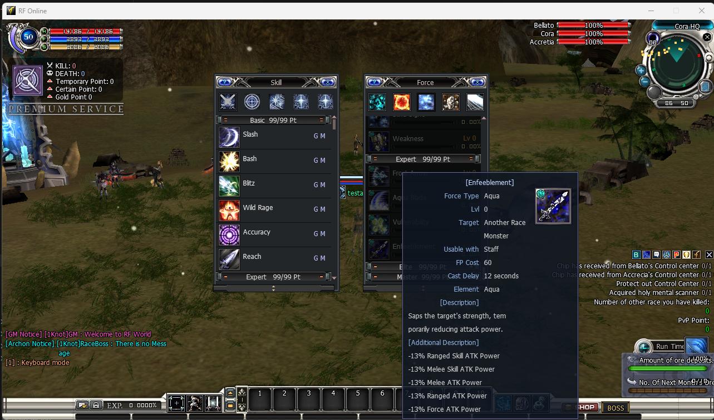

Skill Additional Description
Skill Additional Description
What it does — and why you would use it
Stock RF Online tooltips give you only the old [Description] — a single vague sentence like “Saps the target's strength, temporarily reducing attack power” that never tells you how much, or what it actually changes. This module adds a second block, [Additional Description], under the original text on every skill, class-skill and force tooltip, spelling out the ability's real effect — per level, straight from the numbers the server actually applies.

[Description] and, beneath it, the new [Additional Description] block — here the exact -13% ATK Power lines the server really applies. The original description is never removed.Use it to:
- Give players the honest numbers behind every ability instead of guessing from flavor text.
- Show continuous buffs / debuffs (attack, defense, range, delay, EXP…), inflicted states (Silence, Stun, Immobilize, Prevents Running…) and one-shot effects (buff removal, HP→FP conversion, DP gain) as plain lines.
- Fine-tune the wording for any single ability without recompiling — the text lives in one editable Lua file.
How to activate it
This module uses a two-step switch — both halves must be on before players see anything.
-
Open the boot gate. Edit .Server\Zoneserver\RF_Bin\Modules\SkillDescExtnd\SkillDescExtnd.ini and set
Enable = 1:
This lets the module run. On its own it still shows nothing — the actual on/off for players lives in the Lua.[General] Enable = 1 -
Let the Lua be generated. If there is no
SkillDescExtnd.luabeside the INI, the server writes one automatically on next boot — a complete list of every skill, class-skill and force, each pre-filled with an accurate effect line for levels 1…7 and a-- [DTIndex] EN: … | KO: …comment naming the ability. It ships withEnable = false. -
Turn the effect on. Open …\Modules\SkillDescExtnd\SkillDescExtnd.lua and flip the top switch to
true:
Save. A running server hot-reloads the file and re-pushes the tooltips to everyone online — no restart, no client rebuild.SkillDescExtnd = { Enable = true,
SkillDescExtnd.ini is required when the Zone server starts — a missing module file aborts boot. To go back to plain stock tooltips, set the INI's Enable = 0 (or the Lua's Enable = false); never delete the file. The .lua, by contrast, is safe to delete — the server just regenerates a fresh default one.Editing the text
The generated Lua is the source of truth. Everything in it is plain text you can rewrite; save and it reloads live. Under each of the three type tables (Skill, Force, ClassSkill) an entry is keyed by the ability's DTIndex and holds up to seven strings — one per level. <br> starts a new line inside the tooltip.
-- [100692905] EN: Accurate | KO: Accuracy
[100692905] = {
"Atk/Per +31", -- level 1
"Atk/Per +35", -- level 2
... -- up to level 7
},- Rename freely. Change any string to whatever reads best for your server; the server pushes your text verbatim.
- Multi-line entries. Put
<br>inside a string to break it across lines in the tooltip. - Find an ability fast. Each block is preceded by a comment with its numeric DTIndex and both the English and Korean display name, so you can locate the right entry without a lookup table.
- Blank means no line. An empty string (or a missing level) simply shows no additional line for that level.
How the default text is built
The generator reads each ability's real effect parameters from the Skill.dat / Force.dat / ClassSkill.dat tables and turns them into words. Two independent effect systems feed the block:
- Continuous effects — the buff / debuff that persists while the ability is active. These come in three kinds: a rate (a percent change to a stat such as attack, defense, range, delay, EXP…), a plus (a flat change to a stat), and a state (an inflicted condition such as Silence, Stun, Immobilize, Prevents Running, Cannot Be Hit…). Each is labelled with the stat it really touches.
- Instant (one-shot) effects — what the cast does the moment it lands, such as removing one or all skill / force buffs or debuffs, converting a percentage of your HP into FP, stunning, or raising DP.
- Per level. A skill's numbers change with its level, so each of the seven strings is generated from that level's own value.
- Labels come from the engine, not flavor. The stat / state names are derived from the exact code path that applies the effect, so they match what actually happens in combat.
- A few are best-effort. A small number of states the server never gates on (or that only monster AI reads) are labelled from the ability's clear intent; if one reads wrong for your server, just edit that line in the Lua — it is the source of truth.
- Regenerating. Delete the
.luaand restart the Zone server to rebuild the default text from the current data tables (you will need to flipEnable = trueagain).
With either switch off, tooltips are exactly stock: the original [Description] only, no additional block.